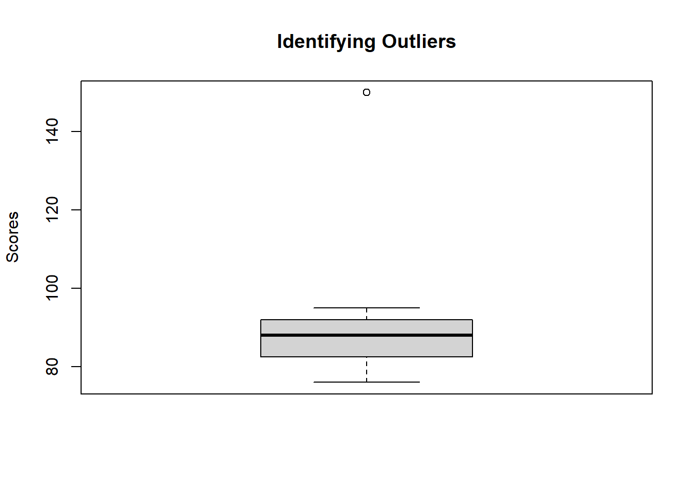
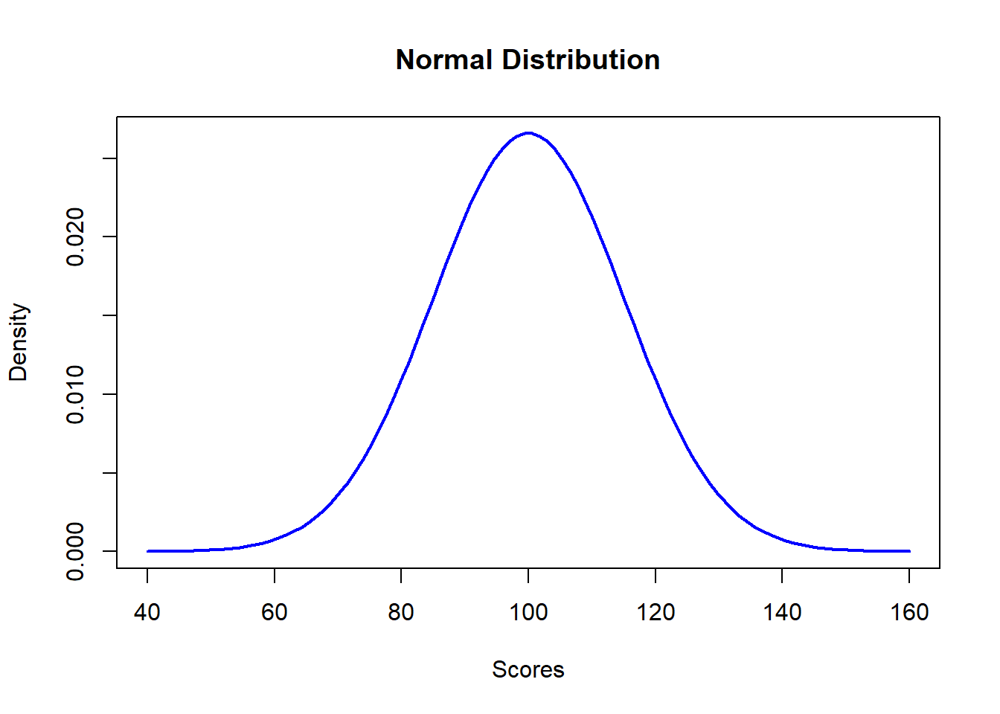
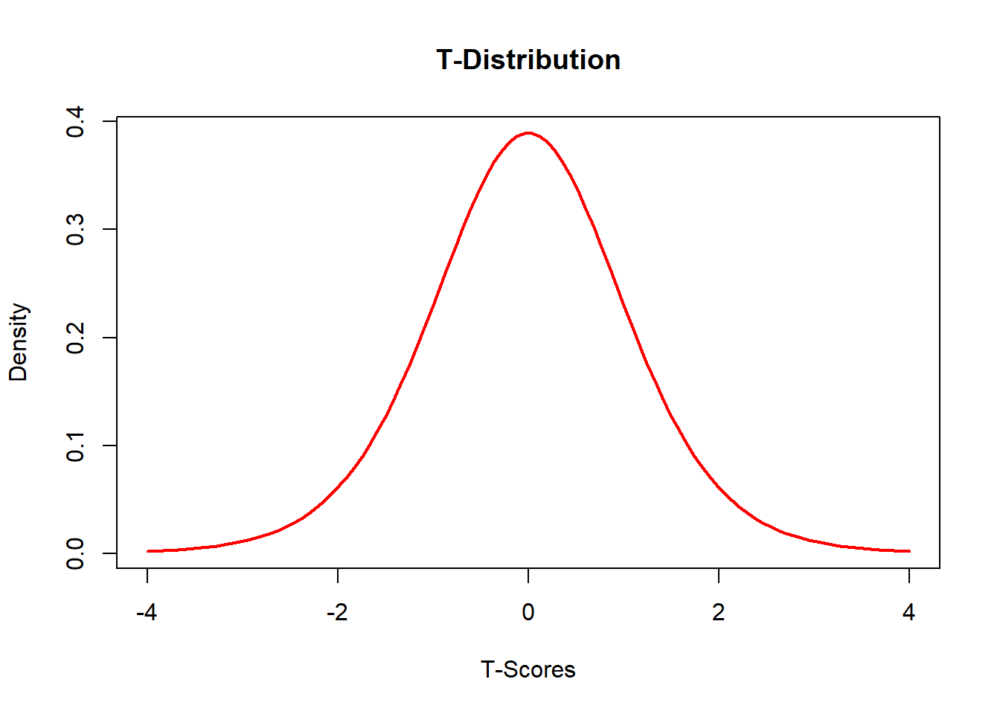

Chapter 4 Descriptive Statistics and Basic Probability in Psychological Research
4.1 Overview of the Importance of Descriptive Statistics and Probability in Psychological Research
Descriptive statistics and probability are foundational components in the field of psychological research. They provide the tools necessary for summarizing, describing, and understanding data, enabling researchers to make informed decisions based on empirical evidence. This section explores why these statistical methods are indispensable and how they contribute to the rigor and validity of psychological studies.
4.2 The Role of Descriptive Statistics
Descriptive statistics offer a way to transform raw data into meaningful information. They summarize large datasets to make them understandable at a glance and provide a clear overview of data through measures of central tendency (mean, median, mode), dispersion (range, variance, standard deviation), and shape (skewness, kurtosis). Here’s how descriptive statistics serve psychological research:
Simplifying Data: Psychological studies often involve large volumes of data. Descriptive statistics simplify this data, making it easier to interpret and communicate findings.
Identifying Patterns: By summarizing data, researchers can quickly identify patterns and trends. For example, the average score on a cognitive test can indicate the general performance level of a group.
Guiding Research Decisions: Initial data analysis using descriptive statistics helps researchers decide on further analytical procedures. For instance, the presence of outliers might prompt decisions on data cleaning or transformation.
Supporting Hypotheses: Descriptive measures provide the first level of analysis to support or refute hypotheses. For example, calculating the mean difference between control and treatment groups can suggest the effectiveness of a psychological intervention.
4.3 The Importance of Probability
Probability theory underpins statistical inference, allowing researchers to make predictions and decisions under uncertainty. In psychological research, probability helps in several ways:
Estimating Likelihoods: Probability enables researchers to estimate how likely it is that observed phenomena could have occurred by chance. This is crucial in hypothesis testing and theory validation.
Understanding Distributions: Many psychological traits and behaviors are assumed to follow specific statistical distributions (e.g., normal distribution). Probability theory helps in understanding these distributions and applying them to real-world data.
Calculating Risks and Odds: In clinical psychology, probability calculations are essential for assessing the risk of outcomes, such as the likelihood of developing a disorder based on exposure to certain conditions.
Enhancing Analytical Precision: Probability aids in estimating the precision of sample statistics (confidence intervals), which provides a range of values that are likely to include the population parameter.
4.4 Descriptive Statistics and Probability in R
Throughout this chapter, we will not only discuss theoretical concepts but also demonstrate how to apply these concepts using R—a versatile tool for statistical computing and graphics. The integration of R exercises will enhance your practical skills in executing descriptive and inferential statistical techniques, crucial for any aspiring psychologist.
4.4.1 Descriptive Statistics to Summarize Data
4.4.1.1 Definition and Importance
Descriptive statistics consist of the statistical tools and techniques used to summarize and organize data effectively. In psychological research, where researchers often deal with large amounts of data, descriptive statistics provide a crucial means of transforming raw data into understandable formats. This section explores why descriptive statistics are essential in research and how they facilitate data analysis.
4.4.1.1.1 What Are Descriptive Statistics?
Descriptive statistics are numerical values calculated from data sets to provide information about the population sample without making further assumptions or inferences. These statistics help to:
Summarize large datasets: Quickly convey basic patterns and tendencies within a data set with a few indicators.
Simplify data presentation: Facilitate data presentation and visualization to enhance understanding and dissemination of research findings.
Facilitate data comparison: Allow researchers to compare and contrast different data sets, which can be crucial in observational studies, experiments, or longitudinal research.
4.4.1.1.2 Key Roles in Research
Identifying Trends: Descriptive statistics enable researchers to identify trends and patterns that warrant further investigation or provide basic insights into behavioral phenomena.
Data Cleaning: Initial descriptive analysis can help detect anomalies or outliers that may require more sophisticated statistical handling.
Groundwork for Inferential Statistics: They provide the groundwork for inferential statistics by ensuring that data are appropriately summarized and understood before making predictions or generalizations about larger populations.
4.4.1.1.3 Categories of Descriptive Statistics
Measures of Central Tendency: These include the mean, median, and mode, which describe the center point of data distributions.
Measures of Variability: These include the range, variance, and standard deviation, which provide insights into the spread of data points around the central tendency.
4.5 Measures of Centrality
Measures of centrality, or measures of central tendency, are summary statistics that describe a single value that represents a typical data point within a dataset. They are essential in psychological research for identifying the center of a data distribution. This section explores the three primary measures of centrality—mean, median, and mode—including their definitions, applications, and how to compute them in R.
4.5.1 Mean
The mean is the arithmetic average of a set of values, or distribution. It is calculated by summing all the numbers in the dataset and then dividing by the count of numbers.
4.5.1.1 Application
- The mean is useful for datasets with interval or ratio scales and is appropriate when data are symmetrically distributed without outliers.
# Sample data vector
scores <- c(85, 90, 76, 88, 95, 92, 81, 77, 84, 92)
# Calculate the mean
mean_score <- mean(scores)
print(paste("The mean score is:", mean_score))## [1] "The mean score is: 86"4.5.2 Median
The median is the middle value in a dataset when the values are arranged in ascending order. If there is an even number of observations, the median is the average of the two middle numbers.
4.5.2.1 Application
- The median is particularly useful for skewed distributions or when the dataset includes outliers, as it provides a better central location that is not unduly influenced by extreme values.
# Calculate the median
median_score <- median(scores)
print(paste("The median score is:", median_score))## [1] "The median score is: 86.5"4.5.3 Mode
The mode is the value that appears most frequently in a dataset. There can be one mode, more than one mode, or no mode at all if no number repeats.
4.5.3.1 Application
- The mode is helpful for nominal data or for determining the most common category or value in a dataset. It’s also useful in distributions with multiple peaks.
# Calculate the mode
get_mode <- function(x) {
uniqx <- unique(x)
uniqx[which.max(tabulate(match(x, uniqx)))]
}
mode_score <- get_mode(scores)
print(paste("The mode score is:", mode_score))## [1] "The mode score is: 92"4.5.4 Conclusion
Measures of centrality are fundamental in describing the central position of a dataset, which can significantly aid in interpreting data and making informed decisions about further statistical analysis. Understanding the properties of the mean, median, and mode—and when to use each—enables researchers to accurately summarize and communicate the central characteristics of their data. The use of R makes these calculations straightforward and should be a routine part of any psychological researcher’s toolkit.
4.6 Measures of Complexity
Measures of complexity, also known as measures of dispersion or variability, provide insights into how data points in a dataset spread around the central value. These measures are crucial in psychological research for understanding the diversity and consistency of responses. This section covers the range, variance, and standard deviation, with a particular emphasis on the latter two due to their importance and application in data analysis.
4.6.1 Range
The range is the simplest measure of complexity, representing the difference between the highest and lowest values in a dataset. It gives a quick sense of the spread of scores but can be heavily influenced by outliers.
# Sample data vector
scores <- c(85, 90, 76, 88, 95, 92, 81, 77, 84, 92)
# Calculate the range
range_value <- max(scores) - min(scores)
print(paste("The range is:", range_value))## [1] "The range is: 19"4.6.2 Variance
Variance measures the average degree to which each point differs from the mean. It quantifies the spread of data points in a distribution, providing insight into the variability within the dataset. Variance is especially useful for identifying how much the data points deviate from the central value, which is critical for hypothesis testing and assessing the reliability of psychological measures.
4.6.2.1 Understanding Variance
Variance (\(\sigma^2\)) is calculated by following these steps: 1. Calculate the Mean: Find the average of the data points. 2. Subtract the Mean: Subtract the mean from each data point to find the deviation of each point from the mean. 3. Square the Deviations: Square each of these deviations to eliminate negative values and emphasize larger deviations. 4. Average the Squared Deviations: Calculate the mean of these squared deviations.
The formula for variance is:
\[ \sigma^2 = \frac{\sum (x_i - \overline{x})^2}{N} \]
where: - \(\sigma^2\) is the variance, - \(x_i\) represents each data point, - \(\overline{x}\) is the mean of the data points, - \(N\) is the number of data points.
# Calculate the variance
variance_value <- var(scores)
print(paste("The variance is:", variance_value))## [1] "The variance is: 42.6666666666667"4.6.3 Standard Deviation
Standard deviation is the square root of the variance and provides a measure of the average distance of each data point from the mean. Unlike variance, which is in squared units, standard deviation is expressed in the same units as the data, making it more interpretable.
4.6.3.1 Understanding Standard Deviation
Standard deviation (\(\sigma\)) is calculated as:
\[ \sigma = \sqrt{\frac{\sum (x_i - \overline{x})^2}{N}} \]
where: - \(\sigma\) is the standard deviation, - \(x_i\) represents each data point, - \(\overline{x}\) is the mean of the data points, - \(N\) is the number of data points.
# Calculate the standard deviation
std_deviation <- sd(scores)
print(paste("The standard deviation is:", std_deviation))## [1] "The standard deviation is: 6.53197264742181"4.6.3.2 Why Use Standard Deviation Instead of Variance?
Standard deviation is often preferred over variance for the following reasons:
Units of Measurement: Standard deviation is expressed in the same units as the original data, making it more intuitive and easier to interpret.
Data Comparison: It allows for a more straightforward comparison of variability across different datasets because the values are not squared.
Practical Relevance: Many statistical techniques, including z-scores and confidence intervals, are based on standard deviation, making it more practical for further analysis.
4.6.3.3 Practical Relevance
Standard deviation is widely used in psychological research to summarize data dispersion. It helps in:
Comparing Variability: Comparing the spread of different datasets or the variability of scores within different groups.
Identifying Outliers: Data points that fall more than two or three standard deviations from the mean are often considered outliers.
Standardized Scores: Standard deviation is fundamental in calculating z-scores, which standardize different datasets for comparison.
4.6.3.4 Example: Application in Psychological Research
Imagine a study measuring stress levels in two groups—those undergoing a new therapy and those receiving standard treatment. By calculating the standard deviation of stress scores in both groups, researchers can compare the variability of responses:
# Stress scores for two groups
therapy_group <- c(30, 45, 50, 55, 60, 70, 80)
standard_group <- c(40, 42, 44, 46, 48, 50, 52)
# Standard deviation for each group
std_therapy <- sd(therapy_group)
std_standard <- sd(standard_group)
print(paste("Standard deviation for therapy group:", std_therapy))## [1] "Standard deviation for therapy group: 16.4389201360094"## [1] "Standard deviation for standard group: 4.32049379893857"In this example, a higher standard deviation in the therapy group might indicate more variability in responses to the new therapy, suggesting it affects individuals differently. Conversely, a lower standard deviation in the standard treatment group might suggest more consistent responses.
4.6.4 Outliers
Outliers are data points that significantly differ from the rest of the dataset. They can have a substantial impact on the results of statistical analyses and are important to identify and understand in psychological research.
Identifying Outliers Outliers can be identified using various methods, including visualizations like boxplots and statistical measures. A common rule of thumb is that any data point more than 1.5 times the interquartile range (IQR) above the third quartile or below the first quartile is considered an outlier.
# Sample data vector
scores <- c(85, 90, 76, 88, 95, 92, 81, 77, 84, 92, 150)
# Create a boxplot to identify outliers
boxplot(scores, main="Identifying Outliers", ylab="Scores")
# Calculate the IQR and identify outliers
Q1 <- quantile(scores, 0.25)
Q3 <- quantile(scores, 0.75)
IQR <- Q3 - Q1
lower_bound <- Q1 - 1.5 * IQR
upper_bound <- Q3 + 1.5 * IQR
outliers <- scores[scores < lower_bound | scores > upper_bound]
print(paste("Outliers:", paste(outliers, collapse = ", ")))## [1] "Outliers: 150"4.6.4.1 Handling Outliers
Depending on the context and the research question, outliers can be handled in various ways:
Examine for Errors: Verify if outliers are due to data entry errors or other mistakes.
Transformation: Apply transformations (e.g., log transformation) to reduce the impact of outliers.
Robust Statistics: Use statistical methods that are less affected by outliers, such as the median or trimmed mean.
Separate Analysis: Analyze outliers separately if they provide valuable insights into a subset of the data.
4.6.4.2 Practical Relevance
Outliers can provide important information about the variability and distribution of data. However, they can also distort statistical analyses and lead to misleading conclusions if not properly addressed. Understanding and handling outliers appropriately ensures the robustness and validity of research findings.
4.6.5 Conclusion
Understanding measures of complexity, such as variance and standard deviation, and identifying and handling outliers are critical in psychological research. These measures provide deep insights into data variability, informing the reliability and generalizability of findings. By mastering these concepts and their application in R, researchers can enhance their analytical capabilities and draw more robust conclusions from their data.
4.7 Calculating Probabilities
Probability is a fundamental concept in psychological research, allowing researchers to make predictions and decisions based on data. This section provides an overview of probability in the context of psychological research, with a focus on the normal and t-distributions, including how to calculate probabilities and create distribution plots using R.
4.7.1 Overview of Probability in the Context of Psychological Research
In psychological research, probability helps quantify the likelihood of various outcomes. Understanding probability allows researchers to:
Assess the significance of findings: Determine whether observed effects are likely due to chance.
Make predictions: Estimate the likelihood of future events based on current data.
Inform decision-making: Guide decisions in experimental design, hypothesis testing, and data interpretation.
4.7.2 Normal Distribution
The normal distribution, also known as the Gaussian distribution, is a continuous probability distribution characterized by its bell-shaped curve. It is defined by two parameters: the mean (μ) and the standard deviation (σ). Many psychological variables, such as IQ scores and reaction times, are approximately normally distributed.
4.7.2.1 Calculating Probabilities of Scores
To calculate the probability of a score falling within a certain range in a normal distribution, we use the cumulative distribution function (CDF).
# Define parameters
mean <- 100
sd <- 15
# Calculate the probability of a score being less than 110
prob_less_than_110 <- pnorm(110, mean, sd)
print(paste("Probability of a score less than 110:", prob_less_than_110))## [1] "Probability of a score less than 110: 0.747507462453077"# Calculate the probability of a score between 90 and 110
prob_between_90_and_110 <- pnorm(110, mean, sd) - pnorm(90, mean, sd)
print(paste("Probability of a score between 90 and 110:", prob_between_90_and_110))## [1] "Probability of a score between 90 and 110: 0.495014924906154"Plotting the Normal Distribution in R
# Generate a sequence of values
x <- seq(mean - 4*sd, mean + 4*sd, length=100)
# Calculate the density
y <- dnorm(x, mean, sd)
# Plot the normal distribution
plot(x, y, type="l", lwd=2, col="blue", main="Normal Distribution",
xlab="Scores", ylab="Density")
4.7.3 T-Distribution
The t-distribution is similar to the normal distribution but has thicker tails. It is used instead of the normal distribution when dealing with smaller sample sizes or when the population standard deviation is unknown. The t-distribution is characterized by degrees of freedom (df), which depend on the sample size.
4.7.3.1 Relevance and Application in Smaller Samples
In psychological research, the t-distribution is particularly relevant when:
Sample sizes are small: The normal distribution may not be an appropriate approximation.
Population standard deviation is unknown: The t-distribution provides a better estimate of the true distribution.
4.7.3.2 Probability Calculations in R
To calculate probabilities using the t-distribution, we use the cumulative distribution function (pt) and the density function (dt).
# Define parameters
df <- 10 # degrees of freedom
# Calculate the probability of a t-score being less than 1.5
prob_less_than_1_5 <- pt(1.5, df)
print(paste("Probability of a t-score less than 1.5:", prob_less_than_1_5))## [1] "Probability of a t-score less than 1.5: 0.91774633677728"# Calculate the probability of a t-score between -1 and 1
prob_between_minus1_and_1 <- pt(1, df) - pt(-1, df)
print(paste("Probability of a t-score between -1 and 1:", prob_between_minus1_and_1))## [1] "Probability of a t-score between -1 and 1: 0.65910686769794"Plotting the T-Distribution in R
# Generate a sequence of values
x <- seq(-4, 4, length=100)
# Calculate the density
y <- dt(x, df)
# Plot the t-distribution
plot(x, y, type="l", lwd=2, col="red", main="T-Distribution",
xlab="T-Scores", ylab="Density")
4.7.4 Conclusion
Understanding and calculating probabilities are crucial for making informed decisions and interpretations in psychological research. The normal distribution and t-distribution are foundational concepts that allow researchers to quantify the likelihood of various outcomes and assess the significance of their findings. Using R to perform these calculations and visualizations enhances the ability to apply these statistical concepts effectively in research.
4.8 Identifying a Sample Space
Identifying a sample space is a fundamental concept in probability and statistics. It involves defining all possible outcomes of a random experiment, which is crucial for calculating probabilities and making inferences about a population based on sample data. This section explores the definition and importance of identifying a sample space, along with examples relevant to psychological research.
4.8.1 Definition and Importance of Identifying a Sample Space
A sample space is the set of all possible outcomes of a random experiment. In probability theory, it is denoted by the symbol \(S\). Understanding the sample space is essential because:
- Foundation for Probability Calculations: The sample space provides the basis for calculating probabilities of events. Each outcome in the sample space can be assigned a probability, which helps in determining the likelihood of various events.
- Ensuring Completeness: Defining the sample space ensures that all potential outcomes are considered, preventing the omission of any possibilities that could affect the analysis.
- Guiding Data Collection: A well-defined sample space helps in designing experiments and surveys by clarifying what outcomes need to be observed and recorded.
- Facilitating Statistical Inference: Identifying the sample space is crucial for making inferences about the population based on sample data, as it defines the context in which the data are interpreted.
4.8.2 Examples of Defining Sample Spaces for Different Types of Psychological Data
In psychological research, sample spaces can vary widely depending on the type of data and the nature of the experiment. Below are examples of how to define sample spaces for different types of psychological data.
4.8.2.1 Example 1: Categorical Data
Consider a survey that asks participants about their preferred type of therapy. The possible responses are: “Cognitive Behavioral Therapy (CBT)”, “Psychodynamic Therapy”, “Humanistic Therapy”, and “Other”. The sample space \(S\) for this categorical data is: \[ S = \{ \text{CBT}, \text{Psychodynamic}, \text{Humanistic}, \text{Other} \} \]
4.8.2.2 Example 2: Ordinal Data
Imagine a questionnaire that assesses the level of agreement with a statement using a Likert scale with the following options: “Strongly Disagree”, “Disagree”, “Neutral”, “Agree”, “Strongly Agree”. The sample space \(S\) for this ordinal data is: \[ S = \{ \text{Strongly Disagree}, \text{Disagree}, \text{Neutral}, \text{Agree}, \text{Strongly Agree} \} \]
4.8.3 Practical Example in R
Let’s illustrate how to define and work with a sample space in R using a simple psychological experiment. Suppose we want to simulate the outcomes of participants reporting their stress levels on a scale from 1 to 5.
# Define the sample space
sample_space <- 1:5
# Simulate responses from 100 participants
set.seed(123) # For reproducibility
responses <- sample(sample_space, 100, replace = TRUE)
# Display the first 10 responses
print(responses[1:10])## [1] 3 3 2 2 3 5 4 1 2 3This example defines a sample space for stress levels and simulates responses from 100 participants, demonstrating how to work with sample spaces in R.
4.8.4 Conclusion
Identifying a sample space is a crucial step in probability and statistics, providing the foundation for probability calculations and statistical inference. By defining all possible outcomes, researchers ensure completeness and accuracy in their analyses. Understanding and correctly identifying sample spaces for different types of psychological data enhance the rigor and validity of research findings.
4.9 Chapter Summary
Chapter 4 covered key concepts in descriptive statistics and basic probability, essential tools in psychological research for summarizing, interpreting, and making predictions based on data. This chapter highlighted the importance of these statistical methods and provided practical examples using R to illustrate their application.
4.9.1 Key Points Recap
Descriptive Statistics to Summarize Data:
Definition and Importance: Descriptive statistics help transform raw data into understandable summaries, simplifying data interpretation, identifying trends, and guiding further analysis.
Measures of Centrality:
Mean: The average value, useful for symmetrically distributed data without outliers.
Median: The middle value, ideal for skewed distributions and data with outliers.
Mode: The most frequently occurring value, important for nominal data and multimodal distributions.
Measures of Complexity:
Range: The difference between the highest and lowest values, providing a quick sense of data spread.
Variance: Measures the average degree of deviation from the mean, highlighting data variability.
Standard Deviation: The square root of variance, expressed in the same units as the data, making it more interpretable and practical for comparing data sets.
Outliers: Identifying and handling outliers to ensure robust statistical analyses.
Calculating Probabilities:
Overview of Probability: Probability quantifies the likelihood of various outcomes, essential for hypothesis testing, predictions, and decision-making in psychological research.
Normal Distribution: Characterized by its bell-shaped curve, used to calculate probabilities and visualize data distribution.
- Practical examples in R to calculate probabilities and plot the normal distribution.
T-Distribution: Similar to the normal distribution but with thicker tails, relevant for smaller samples and unknown population standard deviations.
- Practical examples in R to calculate probabilities and plot the t-distribution.
Identifying a Sample Space:
Definition and Importance: A sample space is the set of all possible outcomes of a random experiment, forming the foundation for probability calculations and ensuring completeness in data analysis.
Examples: Defining sample spaces for different types of psychological data (categorical, ordinal, continuous, binary) and practical R examples to illustrate their application.
4.9.2 Practical Applications
Throughout the chapter, practical R examples demonstrated how to compute descriptive statistics, calculate probabilities, and define sample spaces. These hands-on exercises are designed to enhance your ability to apply statistical concepts in psychological research effectively.
4.9.3 Conclusion
Understanding and applying descriptive statistics and probability concepts are fundamental skills in psychological research. These tools enable researchers to summarize complex data, make informed decisions, and draw reliable conclusions. By mastering these concepts and their practical implementation in R, you can significantly improve the rigor and validity of your research findings.
This chapter provided a comprehensive overview of these essential statistical methods, preparing you for more advanced analyses and applications in subsequent chapters.
4.10 Practice Exercises
These exercises aim to test your understanding of descriptive statistics and probability, encouraging the application of concepts learned in Chapter 4 to practical problems using R.
4.10.1 Exercise 1: Calculating Descriptive Statistics
Task: Given a dataset of test scores, calculate the mean, median, mode, variance, and standard deviation. Identify any outliers in the dataset.
Dataset: Use the following scores for the analysis:
c(55, 65, 75, 85, 95, 105, 115, 125, 135, 145).Questions: Write the R code to perform these calculations and interpret the results.
4.10.2 Exercise 2: Understanding the Normal Distribution
Task: Assume a psychological test follows a normal distribution with a mean of 100 and a standard deviation of 15. Calculate the probability that a randomly selected individual scores:
- Less than 85
- Between 85 and 115
Questions: Use R to find these probabilities and explain the significance of your findings.
4.10.3 Exercise 3: Applying the T-Distribution
Task: You are conducting a small-scale study with 12 participants. Calculate the probability of a t-score being less than 1.5 and between -1 and 1 using the t-distribution.
Questions: Write the R code for these calculations and discuss how the results might differ if a normal distribution were assumed.
4.10.4 Exercise 4: Defining and Simulating Sample Spaces
Task: Define a sample space for a study where participants can choose between three types of exercises (Yoga, Pilates, Aerobics). Simulate responses from 100 participants.
Questions: Define the sample space, simulate the responses using R, and analyze the frequency of each exercise choice.